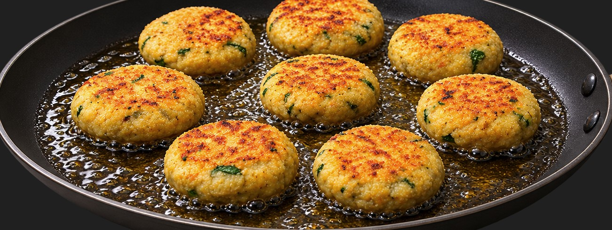

Home /
Snacks & Starters /
Roti-Cutlet
Snacks & Starters
Roti-Cutlet
“Crispy, golden, kid-approved.”
Crisp golden patties shaped however the little ones like

Ingredients
- 3–4 rotis (leftover)
- 1 cup boiled and mashed potatoes and boiled mashed carrots
- 1/4 cup finely chopped onions
- 1/4 cup grated carrots
- 1–2 tsp lemon juice
- 2 tbsp sooji (semolina)
- A bunch of coriander leaves
- Salt
- 2 green chillies, finely chopped
Method
1
Break 3–4 rotis into small pieces. Grind them to a rough mixture and place in a big bowl.

2
Mix all the vegetables and the roti mixture well, and knead like a dough. Let it rest for about 10 minutes.

3
Rub a little oil on your palm and make patties with the mixture in shapes of your choice (kids love this).
💡 Pro Tip: Rub a little oil on your palms before shaping — the mixture won’t stick, and kids love cutting out their own shapes.

4
Roll the patties in sooji and place on a plate. Add oil to a tava on medium heat and start adding the cutlets, cooking till brownish.

5
Flip over to ensure it cooks on both sides, till crispy. Make a dip with yoghurt, freshly ground garlic and salt, or use a mayonnaise dip of your choice. Serve hot cutlets with the dip.
🍳
')">